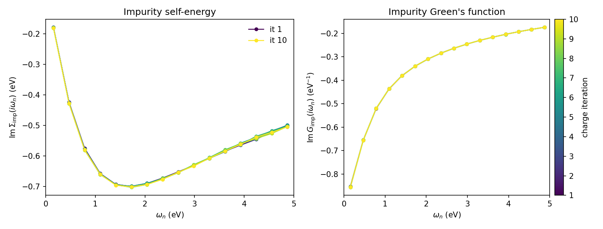

Charge self-consistent DFT+DMFT with VASP: SrVO3
This tutorial walks through a full charge self-consistent (CSC) DFT+DMFT calculation for the prototypical correlated metal SrVO3, using the VASP driver shipped with dftkit together with modest. We treat the vanadium \(t_{2g}\) manifold as the correlated subspace, solve the impurity problem with the CT-SEG solver from triqs_ctseg, and feed the resulting charge-density correction back into VASP until self-consistency.
SrVO3 is the textbook moderately-correlated metal of DMFT: a single electron in the three vanadium \(t_{2g}\) orbitals (\(d^1\)) that, with a realistic \(U = 4.5\) eV and \(J = 0.65\) eV, develops a renormalized quasi-particle (\(Z \approx 0.6\)) on top of the DFT band structure. It stays metallic, which is exactly what the self-energy plot below shows.
Unlike the older vasp_dmft work flow, the whole calculation is driven by a
single Python script: the dftkit VASP Driver keeps one
VASP process alive in the background, exchanges the Kohn-Sham
Hamiltonian, projectors and charge-density correction through the
vaspout.h5 / vaspgamma.h5 interface, and runs the PLOVasp projector
construction internally. No source-code patching and no auxiliary shell script
are needed.
Note
This example requires VASP 6.5.0 or newer, built with HDF5
support enabled, plus the TRIQS applications triqs_modest,
triqs_dftkit and triqs_ctseg.
All input files are collected in the tutorial directory:
POSCAR, INCAR.scf,
INCAR, plo.cfg,
vasp_modest_csc.py and
plot_sigma.py. You have to provide your own
POTCAR (Sr_sv, V_sv and O).
Step 1 — converge the DFT charge density
We start from the simple cubic SrVO3 cell:
SrVO3
3.859374
+1.00000000 +0.0000000000 +0.0000000000
+0.0000000000 +1.00000000 +0.0000000000
+0.0000000000 +0.0000000000 +1.0000000000
Sr V O
1 1 3
Direct
+0.0000000000 +0.0000000000 +0.0000000000
+0.5000000000 +0.5000000000 +0.5000000000
+0.5000000000 +0.5000000000 +0.0000000000
+0.5000000000 +0.0000000000 +0.5000000000
+0.0000000000 +0.5000000000 +0.5000000000
Run a plain DFT calculation first to obtain a converged charge density. We use
the INCAR.scf below; the k-mesh is set automatically through
KSPACING so no KPOINTS file is required.
System = SrVO3
NCORE = 1
KPAR = 4
ISMEAR = 0
SIGMA = 0.1
KSPACING = 0.2
# converge the wave functions tightly
EDIFF = 1.E-10
NELMIN = 20
NBANDS = 32
# energy window (absolute) in which the projector channels are optimized
EMIN = -1.0
EMAX = 10.1
NEDOS = 5001
LMAXMIX = 4
# project onto the vanadium d (t2g) states; atom 2 in the POSCAR is V
LORBIT = 14
LOCPROJ = "2 : d : Pr"
LORBIT = 14 lets VASP optimize the localized projector channels
inside the energy window defined by EMIN / EMAX, and the single
LOCPROJ line selects the vanadium \(d\) states (atom 2 in the
POSCAR). The projectors are written to vaspout.h5.
Run VASP in a dedicated directory and keep the resulting
CHGCAR (and WAVECAR); the CSC run below reads them as its
starting point.
Step 2 — the projector definition
The correlated subspace is configured for PLOVasp through plo.cfg:
[General]
[Group 1]
SHELLS = 1
NORMALIZE = True
EWINDOW = -1.4 2.0
[Shell 1]
LSHELL = 2
IONS = 2
TRANSFORM = 1.0 0.0 0.0 0.0 0.0
0.0 1.0 0.0 0.0 0.0
0.0 0.0 0.0 1.0 0.0
We define a single shell (LSHELL = 2, i.e. \(d\)) on the vanadium ion
(IONS = 2) and normalize the projectors inside the energy window
EWINDOW. The TRANSFORM matrix picks the three \(t_{2g}\) orbitals
(\(d_{xy}, d_{yz}, d_{xz}\)) out of the five \(d\) orbitals, which are
the only correlated degrees of freedom for cubic SrVO3. The driver
runs PLOVasp with this file on every charge iteration; you do not call the
converter yourself.
Step 3 — switch the INCAR to charge self-consistency
For the CSC run we read the converged density and let VASP wait for the DMFT charge update at every electronic step:
System = SrVO3
ISMEAR = 0
SIGMA = 0.1
KSPACING = 0.2
# converge the wave functions
EDIFF = 1.E-7
# energy window (absolute) in which the projector channels are optimized
EMIN = -1.0
EMAX = 10.1
NBANDS = 32
LMAXMIX = 4
# project onto the vanadium d (t2g) states; atom 2 in the POSCAR is V
LORBIT = 14
LOCPROJ = "2 : d : Pr"
# --- charge self-consistency -------------------------------------------------
# ICHARG = 5 makes VASP wait after every electronic step for the DMFT charge
# update and read it back, keeping the externally supplied density correction.
ICHARG = 5
NELM = 1000
NELMIN = 1000
NELMDL = -3
IMIX = 4
BMIX = 0.2
AMIX = 0.02
# exchange the projectors and the charge update through the HDF5 interface
# (vaspout.h5 / vaspgamma.h5); requires VASP >= 6.5.0 built with HDF5 support
LSYNCH5 = True
LWAVE = False
LCHG = False
The key additions over the plain SCF run are ICHARG = 5 (read the charge
density and apply the external correction), a very large NELM / NELMIN
so that VASP never stops on its own, and the conservative mixing
(IMIX/AMIX/BMIX) that stabilizes the charge update. LSYNCH5 =
True routes the projectors and the charge-density correction through
vaspout.h5 / vaspgamma.h5; from VASP 6.5.0 onwards this replaces the
text-based GAMMA interface and needs no changes to the VASP source.
Copy the converged CHGCAR and WAVECAR from Step 1, this
INCAR, the POSCAR, your POTCAR and plo.cfg into
a fresh working directory.
Step 4 — the DMFT driver script
The complete CSC loop is implemented in vasp_modest_csc.py:
# ============================================================================
# Charge self-consistent (CSC) DFT+DMFT for SrVO3 with VASP + TRIQS/modest
# ============================================================================
#
# This script drives a full CSC DFT+DMFT calculation. The structure is two
# nested loops:
#
# * outer loop (n_total_loops): one DFT charge update per iteration. VASP is
# kept alive as a persistent background process by the dftkit VASP driver;
# each outer iteration feeds the DMFT charge-density correction back into
# VASP and reads the updated Kohn-Sham Hamiltonian / projectors.
# * inner loop (n_dmft_loops): the DMFT self-consistency cycle (build the
# hybridization, solve the impurity with CT-SEG, update the self-energy)
# for the current DFT Hamiltonian.
#
# The run always ends on a DMFT step: after the last outer iteration the DFT
# code is not invoked again (see the guard around the charge update below).
#
# Required inputs in this directory: INCAR, POSCAR, POTCAR, KPOINTS and the
# PLOVasp projector definition plo.cfg.
import numpy as np
import triqs.utility.mpi as mpi
from triqs.gfs import BlockGf, MeshImFreq
from triqs_ctseg.solve_generic import solve_generic
import triqs_modest as M
from triqs_dftkit.vasp import Driver as VaspDriver, MPIHandler
from triqs_modest.dft_driver import DftDriver
from h5 import HDFArchive
# --- Physical and run parameters ---------------------------------------------
seedname = "vasp"
beta = 20.0 # inverse temperature (1/eV)
U = 4.50 # Kanamori intra-orbital interaction (eV)
J = 0.65 # Hund's coupling (eV)
Up = U -2*J # inter-orbital interaction (rotationally invariant choice)
n_iw = 1000 # number of Matsubara frequencies
n_total_loops = 10 # outer CSC (DFT charge) iterations
n_dmft_loops = 1 # inner DMFT iterations per outer loop
n_iter_dft = 2 # VASP SCF steps per outer loop (>1 for ALGO that needs
# several charge updates before DMFT; Sigma is held fixed
# and the charge correction is recomputed between steps)
# --- DFT driver --------------------------------------------------------------
# Wrap the dftkit VASP driver in the modest DftDriver. The VASP driver launches
# vasp_command under MPI and converts the output via PLOVasp (plo.cfg).
driver = DftDriver(VaspDriver(seedname=seedname, plo_cfg="plo.cfg",
mpi_handler=MPIHandler(mpi_exec="mpirun -np 16"),
vasp_command="vasp_std"))
# Run the initial DFT, convert the output, and return the target electron count
# together with the one-body elements (Kohn-Sham Hamiltonian + projectors).
target_density, obe = driver.one_body_elements_from_dft()
mpi.report(obe)
# Build the embedding (correlated subspace) from the projector space.
E = M.make_embedding(obe.C_space); mpi.report(E.description(True))
# Local Kanamori interaction Hamiltonian on the impurity.
h_int = M.make_kanamori(E.sigma_names, E.imp_decomposition(0), U, Up, J, False, False)
# Double-counting correction (Held's fully-localized-limit flavour).
DcTerm = M.DcSolver("NonPolarized", "cHeld", U, J)
mesh = MeshImFreq(beta=beta, S = "Fermion", n_iw=n_iw)
# DFT-only chemical potential and local Green's function, used to detect the
# degenerate block structure that the impurity quantities are symmetrized over.
mu_dft = M.find_chemical_potential(target_density, obe, beta, verbosity=False)
Gdft = E.extract(M.local_gf.gloc(mesh, obe, mu_dft))[0]
mpi.report(f"Gdft density= {Gdft.total_density().real}")
deg_blocks = M.analyze_degenerate_blocks(Gdft)
mpi.report(f"deg_blocks= {deg_blocks}")
# Initialise the self-energy: zero dynamic part plus the static double counting.
Sigma_imp_dc = DcTerm.dc_self_energy(Gdft)
Sigma_imp_dynamic, Sigma_imp_static = E.make_zero_imp_self_energies(mesh)[0]
for i in range(len(Sigma_imp_static)): Sigma_imp_static[i] += Sigma_imp_dc[i]
# DFT + DMFT loop
try:
for n_iter in range(n_total_loops):
mpi.report(f"\n{'='*60}\n=== Global DFT+DMFT iteration {n_iter+1}/{n_total_loops} ===\n{'='*60}")
Hloc0 = E.extract(M.atomic_levels_and_delta.impurity_levels(obe))[0]
mpi.report(f"Hloc0= {[h[0,0].real for h in Hloc0]}")
# for first iteration converge Sigma imp first
if n_iter == 0:
n_dmft_loops_loc = 4
else:
n_dmft_loops_loc = n_dmft_loops
# Begin DMFT loop
for n_dmft_iter in range(n_dmft_loops_loc):
mpi.report(f"\n--- DMFT iteration {n_dmft_iter+1}/{n_dmft_loops_loc} "
f"(global iter {n_iter+1}/{n_total_loops}) ---")
Sigma_imp_static_minus_dc = [block-dc for (block, dc) in zip(Sigma_imp_static, Sigma_imp_dc)]
Sigma_C_dynamic, Sigma_C_static = E.embed([Sigma_imp_dynamic], [Sigma_imp_static_minus_dc])
mu = M.find_chemical_potential(target_density, obe, Sigma_C_dynamic, Sigma_C_static)
Gloc = E.extract(M.local_gf.gloc(obe, mu, Sigma_C_dynamic, Sigma_C_static))[0]
Eimp = [h-mu*np.eye(h.shape[0])-dc for (h,dc) in zip(Hloc0, Sigma_imp_dc)]
Delta = M.symmetrize(M.hybridization(Eimp, Gloc, Sigma_imp_dynamic, Sigma_imp_static), deg_blocks)
solver_params = dict(n_iw=n_iw, n_tau=10*n_iw, length_cycle=50,
n_cycles = int(4e+6/mpi.size),
n_warmup_cycles = int(1e+4),
perform_tail_fit=True,
fit_min_w=10, fit_max_w=14,
)
solver_results = solve_generic(Delta, Eimp, h_int, **solver_params)
Sigma_imp_dynamic, Sigma_imp_static = solver_results.Sigma_dynamic, solver_results.Sigma_HartreeFock
solver_results.G_iw << M.symmetrize(solver_results.G_iw, deg_blocks)
solver_results.Sigma_iw << M.symmetrize(solver_results.Sigma_iw, deg_blocks)
solver_results.Sigma_dynamic << M.symmetrize(solver_results.Sigma_dynamic, deg_blocks)
# End of DMFT loop
# Update Double-counting Term
Sigma_imp_dc = DcTerm.dc_self_energy(solver_results.G_iw)
Eimp_dc = DcTerm.dc_energy(solver_results.G_iw)
Sigma_imp_static_minus_dc = [block-dc for (block, dc) in zip(Sigma_imp_static, Sigma_imp_dc)]
# Re-embed the self-energy
Sigma_C_dynamic, Sigma_C_static = E.embed([Sigma_imp_dynamic], [Sigma_imp_static_minus_dc])
# Re-compute the chemical potential
mu = M.find_chemical_potential(target_density, obe, Sigma_C_dynamic, Sigma_C_static)
# Compute the charge density correction
N_k = M.charge_density_correction(obe, mu, Sigma_C_dynamic, Sigma_C_static)
# Impurity interaction energy
Eint = 0.5 * np.real((solver_results.Sigma_iw*solver_results.G_iw).total_density())
mpi.report(f"Eint= {Eint}")
Eint_m_dc = (Eint - Eimp_dc)
mpi.report(f"Eint-Edc= {Eint_m_dc}")
mpi.report("Saving DFT + DMFT iteration...")
if mpi.is_master_node():
with HDFArchive("checkpoint.h5", "a") as ar:
path = f"it={len(ar) + 1}"
ar.create_group(path)
ar[path]["mu"] = mu
ar[path]["nloc"] = Gloc.total_density().real
ar[path]["nimp"] = solver_results.G_iw.total_density().real
ar[path]["Delta_iw"] = Delta
ar[path]["Eimp"] = Eimp
ar[path]["Gloc_iw"] = Gloc
ar[path]["Gimp_iw"] = solver_results.G_iw
ar[path]["Sigma_iw"] = solver_results.Sigma_iw
ar[path]["Sigma_iw_static"] = solver_results.Sigma_HartreeFock
ar[path]["Sigma_dc"] = Sigma_imp_dc
# Update the one-body Hamiltonian with the charge density correction.
# Skip on the last outer iteration: the calculation must end on a DMFT
# step, so there is no point triggering another VASP charge update whose
# result would never be used.
if n_iter < n_total_loops - 1:
mpi.report(f"Calling VASP charge update / DFT driver "
f"(global iter {n_iter+1}/{n_total_loops})...")
# Run n_iter_dft VASP charge-update steps with the self-energy held
# fixed. Between steps the projectors change, so recompute mu and the
# charge density correction from the freshly converted one-body
# elements. The last step is followed directly by DMFT, which
# recomputes everything, so no recompute is needed there.
for i_dft in range(n_iter_dft):
obe = driver.update_one_body_elements_with_charge_correction(N_k, Eint_m_dc)[1]
if i_dft == n_iter_dft - 1:
break
Sigma_C_dynamic, Sigma_C_static = E.embed([Sigma_imp_dynamic], [Sigma_imp_static_minus_dc])
mu = M.find_chemical_potential(target_density, obe, Sigma_C_dynamic, Sigma_C_static)
N_k = M.charge_density_correction(obe, mu, Sigma_C_dynamic, Sigma_C_static)
finally:
# Ensure VASP is killed even if the script crashes
driver.driver.kill()
A few points worth highlighting:
The VASP driver is wrapped in the modest
DftDriver. TheMPIHandlercontrols how VASP is launched (herempirun -np 16), independently of how many ranks run the Python/solver part:driver = DftDriver(VaspDriver(seedname="vasp", plo_cfg="plo.cfg", mpi_handler=MPIHandler(mpi_exec="mpirun -np 16"), vasp_command="vasp_std"))
one_body_elements_from_dftperforms the initial DFT step, runs the PLOVasp conversion and returns the target electron count together with the one-body elements (the Kohn-Sham Hamiltonian and the projectors). From these we build the embedding, the local Kanamori interaction (\(U = 4.5\), \(J = 0.65\) eV) and the fully-localized-limit double counting. We work at an inverse temperature \(\beta = 20\) eV-1.The calculation is organized as two nested loops. The outer loop (
n_total_loops) performs one DFT charge update per iteration; the inner loop (n_dmft_loops) is the DMFT self-consistency cycle for the current Kohn-Sham Hamiltonian. The first outer iteration runs a few extra DMFT cycles to converge the self-energy before the first charge update.After each DMFT cycle the charge-density correction is computed with
charge_density_correctionand handed back to VASP viaobe = driver.update_one_body_elements_with_charge_correction(N_k, Eint_m_dc)[1]
which triggers the next VASP charge update and returns the freshly converted one-body elements.
Every outer iteration is appended to
checkpoint.h5underit=<n>, including the impurity self-energySigma_iwthat we track below (the impurity and local Green’s functionsGimp_iw/Gloc_iware stored as well). The run always ends on a DMFT step — the charge update is skipped on the last outer iteration.
Step 5 — run it
Load the environment and launch the script under MPI. The Python/solver part runs on 32 ranks here, while VASP is launched separately on 16 ranks by the driver:
mpirun -n 32 python vasp_modest_csc.py 1>log 2>err
For meaningful CT-SEG statistics use at least a few tens of cores. The whole ten-iteration run takes a few minutes on a single modern node.
Step 6 — track the impurity self-energy
To monitor convergence we follow the impurity self-energy across the charge
iterations. The script plot_sigma.py reads
checkpoint.h5 and produces the figure below:
# ============================================================================
# Track the impurity self-energy and Green's function across the CSC iterations
# ============================================================================
#
# Reads the checkpoint.h5 archive written by vasp_modest_csc.py and produces
# sigma_convergence.png with two panels, both on the low-frequency Matsubara
# window 0 < w_n < 5 eV and one curve per global (charge) iteration, coloured
# from the first (light) to the last (dark):
#
# * left : imaginary part of the impurity self-energy Im Sigma(i w_n)
# * right : imaginary part of the impurity Green's function Im G_imp(i w_n)
#
# All t2g/spin blocks are symmetry-equivalent here, so we follow a single
# representative block.
#
# Usage: python plot_sigma.py [checkpoint.h5]
# Pass the shipped reference archive to reproduce the tutorial figure:
# python plot_sigma.py checkpoint_ref.h5
import sys
import numpy as np
import matplotlib
matplotlib.use("Agg")
import matplotlib.pyplot as plt
from triqs.gfs import BlockGf, Gf # noqa: F401 (needed so h5 recognises the Gf)
from h5 import HDFArchive
fname = sys.argv[1] if len(sys.argv) > 1 else "checkpoint.h5"
block = "up_0" # representative (degenerate) impurity block
w_max = 5.0 # plot the Matsubara window 0 < w_n < w_max (eV)
def iteration_keys(ar):
keys = [k for k in ar.keys() if k.startswith("it=")]
return sorted(keys, key=lambda k: int(k.split("=")[1]))
def positive_branch(g):
"""positive Matsubara frequencies and the (1,1) diagonal data, masked to w_max."""
n_iw = g.data.shape[0] // 2
w = np.array([complex(x).imag for x in g.mesh])[n_iw:]
d = g.data[n_iw:, 0, 0]
m = w <= w_max
return w[m], d[m]
with HDFArchive(fname, "r") as ar:
keys = iteration_keys(ar)
n_it = len(keys)
sigma, gimp = [], []
for k in keys:
wn, s = positive_branch(ar[k]["Sigma_iw"][block])
_, g = positive_branch(ar[k]["Gimp_iw"][block])
sigma.append((wn, s.imag))
gimp.append((wn, g.imag))
cmap = plt.get_cmap("viridis")
fig, (axS, axG) = plt.subplots(1, 2, figsize=(11, 4.2))
for i in range(n_it):
col = cmap(i / max(n_it - 1, 1))
lbl = f"it {i + 1}" if (i == 0 or i == n_it - 1) else None
axS.plot(sigma[i][0], sigma[i][1], "-o", ms=4, lw=1.2, color=col, label=lbl)
axG.plot(gimp[i][0], gimp[i][1], "-o", ms=4, lw=1.2, color=col, label=lbl)
axS.set_xlabel(r"$\omega_n$ (eV)")
axS.set_ylabel(r"$\mathrm{Im}\,\Sigma_\mathrm{imp}(i\omega_n)$ (eV)")
axS.set_title("Impurity self-energy")
axS.set_xlim(0, w_max)
axS.legend(frameon=False)
axG.set_xlabel(r"$\omega_n$ (eV)")
axG.set_ylabel(r"$\mathrm{Im}\,G_\mathrm{imp}(i\omega_n)$ (eV$^{-1}$)")
axG.set_title("Impurity Green's function")
axG.set_xlim(0, w_max)
sm = plt.cm.ScalarMappable(cmap=cmap, norm=plt.Normalize(vmin=1, vmax=n_it))
cbar = fig.colorbar(sm, ax=axG, pad=0.02)
cbar.set_label("charge iteration")
fig.tight_layout()
fig.savefig("sigma_convergence.png", dpi=150)
print(f"wrote sigma_convergence.png ({n_it} iterations, w_n < {w_max} eV)")
{kind=link}

So that the figure can be reproduced without rerunning the (compute-heavy) CSC
loop, a small reference archive
checkpoint_ref.h5 holding the Sigma_iw,
Gimp_iw and mu of the converged run is shipped with the tutorial. Pass
it on the command line to regenerate the plot directly:
python plot_sigma.py checkpoint_ref.h5
Both panels show the low-frequency Matsubara window \(0 < \omega_n < 5\) eV, with one curve per charge iteration coloured from the first (dark) to the last (light). The left panel is the imaginary part of the impurity self-energy \(\mathrm{Im}\,\Sigma_\mathrm{imp}(i\omega_n)\); its Fermi-liquid turnover — bending back towards zero as \(\omega_n \to 0\) — together with its slope near the origin (\(Z \approx 0.6\)) is the signature of the renormalized metal. The right panel is the imaginary part of the impurity Green’s function \(\mathrm{Im}\,G_\mathrm{imp}(i\omega_n)\), which stays large down to the lowest Matsubara frequency — i.e. substantial spectral weight at the Fermi level, again confirming the metallic state. The curves for all ten charge iterations lie essentially on top of each other, showing that the charge self-consistency is converged.
Note
Why track the self-energy rather than \(|G_\mathrm{imp} - G_\mathrm{loc}|\)? The latter measures the inner DMFT self-consistency (\(G_\mathrm{imp} = G_\mathrm{loc}\)), not the charge convergence of the outer loop. With a single DMFT cycle per charge update the impurity and local Green’s functions are evaluated once within the same iteration and never iterated to coincide, so their difference is dominated by the stochastic CT-SEG noise and carries no trend. The self-energy, by contrast, feels the shift of the impurity levels as the charge density is updated and converges smoothly, which is why we follow it here.